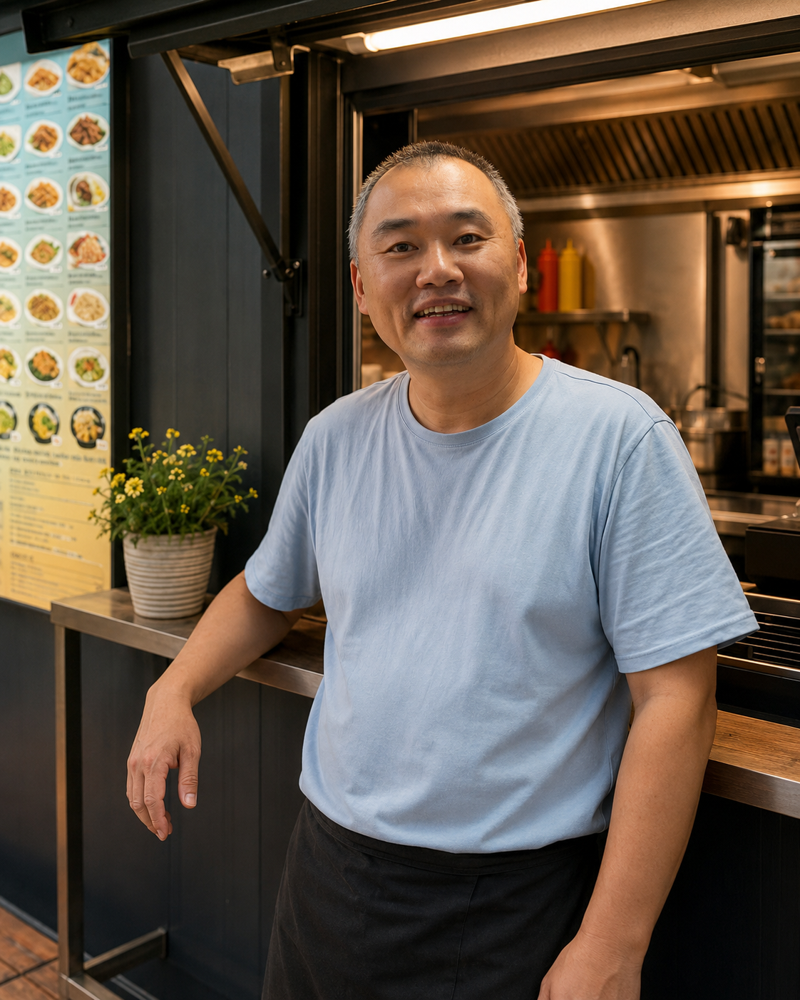

Kdo je Čenda
Čenda Zheng je Číňan žijící v Česku a tvář Taiwan39 Food v Českých Budějovicích. Na webu pomáhá učit čínštinu od základů — pinyin, tóny, znaky, slova a jednoduché věty bez učebnicového stresu.

Čenda Zheng je Číňan žijící v Česku a tvář Taiwan39 Food v Českých Budějovicích. Na webu pomáhá učit čínštinu od základů — pinyin, tóny, znaky, slova a jednoduché věty bez učebnicového stresu.

Taiwan39 Food není jen místo s jídlem. Je to malý kousek Asie v Českých Budějovicích — stánek, kde vznikají fráze, videa, situace i nápady pro tento web.
Sledujte Čendu
Sledujte Čendu na sociálních sítích a hledejte videa podle hashtagů.
#cinstinascendou #zhengjianguo #cendavari #taiwan39food